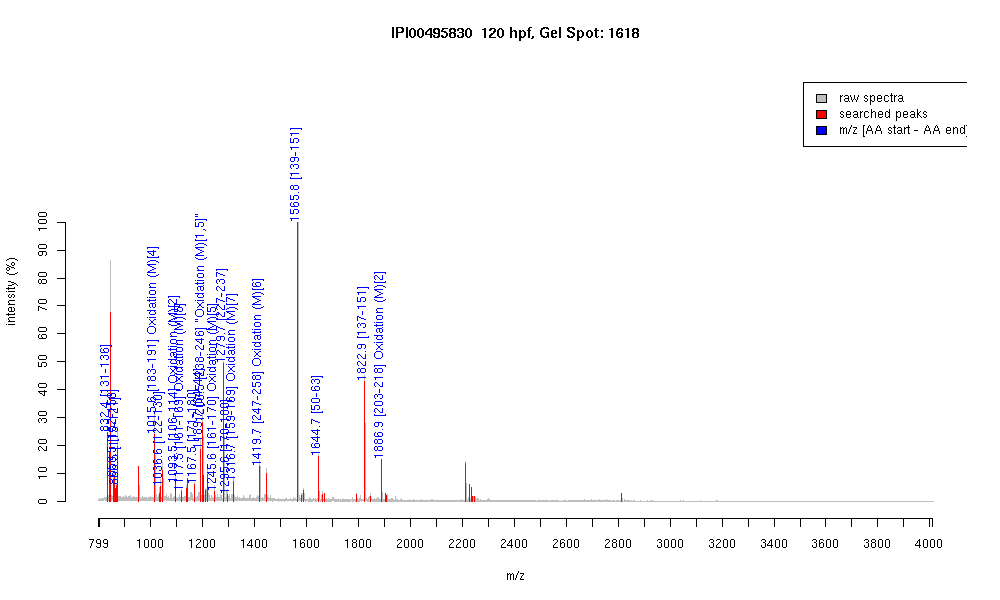

| Name | Apolipoprotein A-I precursor |
|---|---|
| MW | 30237.5 |
| PI | 5.06 |
| Mascot Protein Score | 313 |
| Masses (matched / unmatched) | 19 / 32 |

| Peptide | MZ (calc) | MZ (observed) | Error (DA) | Error (PPM) | Start | Stop | Modifications |
|---|---|---|---|---|---|---|---|
| HIDEYR | 832.3948 | 832.3951 | 0.0003 | 0 | 131 | 136 | |
| QNAEQLR | 858.4427 | 858.4581 | 0.0154 | 18 | 152 | 158 | |
| SKLEPHR | 866.4842 | 866.4886 | 0.0044 | 5 | 115 | 121 | |
| VVPMVEAVR | 1015.5604 | 1015.5505 | -0.0099 | -10 | 183 | 191 | Oxidation (M)[4] |
| AELYTALQK | 1036.5674 | 1036.552 | -0.0154 | -15 | 122 | 130 | |
| VMTDVEDLR | 1093.5194 | 1093.5115 | -0.0079 | -7 | 106 | 114 | Oxidation (M)[2] |
| LEPLMDDIR | 1117.5558 | 1117.5452 | -0.0106 | -9 | 161 | 169 | Oxidation (M)[5] |
| AFESNIEETK | 1167.5527 | 1167.5409 | -0.0118 | -10 | 171 | 180 | |
| AAALVYLNQVK | 1189.6938 | 1189.6766 | -0.0172 | -14 | 34 | 44 | |
| MEPYMENVR | 1200.5023 | 1200.4878 | -0.0145 | -12 | 238 | 246 | "Oxidation (M)[1,5]" |
| LEPLMDDIRK | 1245.6508 | 1245.6375 | -0.0133 | -11 | 161 | 170 | Oxidation (M)[5] |
| IAPHTQDLQTR | 1279.6754 | 1279.6704 | -0.005 | -4 | 227 | 237 | |
| KAFESNIEETK | 1295.6477 | 1295.6422 | -0.0055 | -4 | 170 | 180 | |
| AKLEPLMDDIR | 1316.6879 | 1316.6781 | -0.0098 | -7 | 159 | 169 | Oxidation (M)[7] |
| TTFAQMYETIAK | 1419.6825 | 1419.6642 | -0.0183 | -13 | 247 | 258 | Oxidation (M)[6] |
| LEPVFQEYSALNR | 1565.7958 | 1565.7874 | -0.0084 | -5 | 139 | 151 | |
| ALDNLDGTDYEQYK | 1644.7388 | 1644.7242 | -0.0146 | -9 | 50 | 63 | |
| EKLEPVFQEYSALNR | 1822.9333 | 1822.9277 | -0.0056 | -3 | 137 | 151 | |
| TMAAPYAEEYKEQLVK | 1886.9204 | 1886.9092 | -0.0112 | -6 | 203 | 218 | Oxidation (M)[2] |